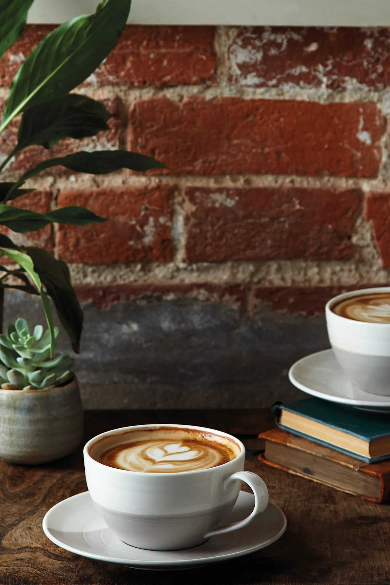
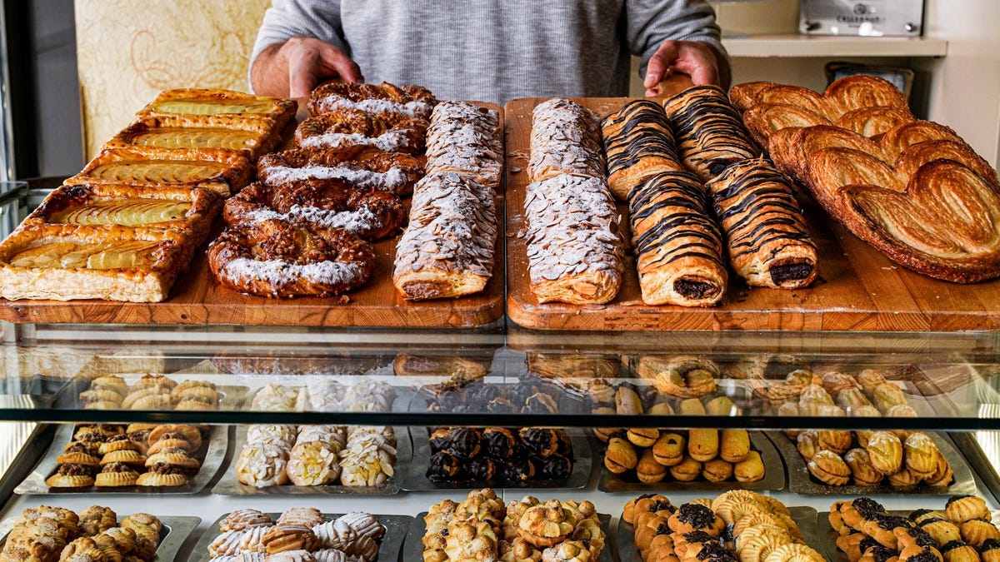
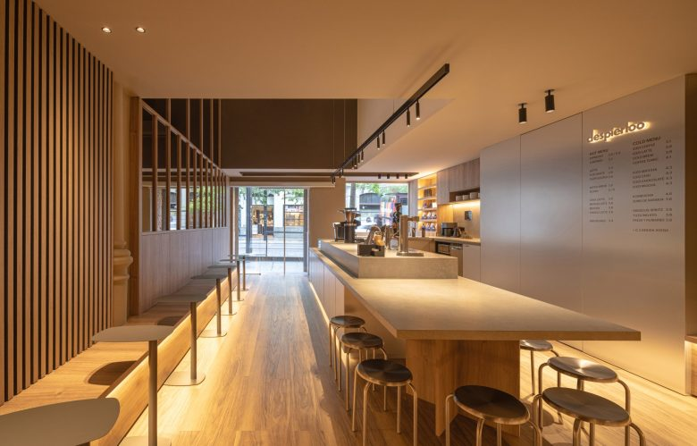
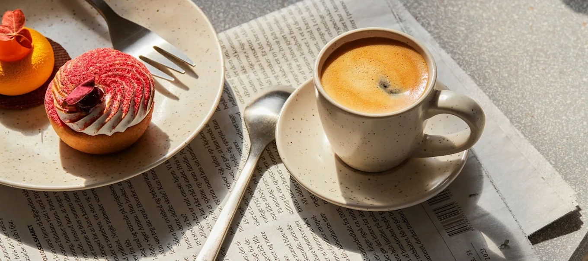

Coado Delícia
Grãos selecionados, aroma envolvente e o sabor de café passado na hora.
R$ 8,00CAFÉ FRESCO · BOLO QUENTINHO · ITU
Um endereço para desacelerar, escolher seu café favorito e transformar uma pausa simples em um momento especial.


A CASA
Na Delícia, a gente acredita que um bom café não precisa de muita coisa: um grão escolhido, uma receita feita com carinho e uma mesa onde você queira ficar.
Somos cafeteria, confeitaria e ponto de encontro. Chegue cedo ou apareça no meio da tarde. Sempre vai ter um lugar para você.
Conheça nosso espaço →03 — DIÁRIO DA DELÍCIA


04 — VENHA DE VERDADE
No centro de Itu, pertinho de tudo e pronto para receber você.